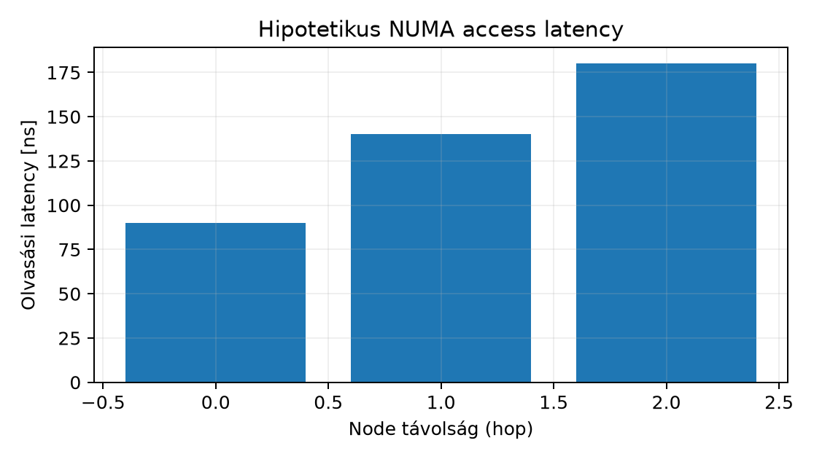

Egy többmagos C++ szolgáltatásnál előfordul, hogy a benchmark
laborban elért átvitel éles környezetben rendszeresen visszaesik,
miközben a CPU-fogyasztás látszólag változatlan. A fejlesztői
eszköztárból a perf és a profilozó azt mutatja, hogy a
szálak futnak, a munkaterhelés helyes, a memóriaallokációk sem
szivárognak. A hiányzó réteg gyakran a szerver fizikai topológiája: egy
kétfoglalatos (two-socket) gépen a processzorok nem egységes sebességgel
érik el a teljes fizikai memóriát. A numactl és a
hwloc eszközökkel megérthető, hogy egy szál melyik
processzorcsoporton fut, és az általa használt memória melyik fizikai
node-hoz tartozik. A tárgyalt módszerekkel a C++ szolgáltatás
erőforrás-közelsége tudatosan tervezhető, és a döntés mérhetővé
válik.
A nem egységes memória-hozzáférés (Non-Uniform Memory Access, NUMA) olyan többprocesszoros architektúra, ahol minden CPU-csoporthoz saját memóriavezérlő és fizikai memóriatartomány tartozik. Ezt a csoportot NUMA node-nak nevezzük. Egy x86-64 kétfoglalatos szerveren általában két node van, minden processzorfoglalatban saját memória-csatornával. Amikor egy CPU a saját node-jának memóriáját olvassa, local access történik; amikor egy másik node memóriáját kell elérnie, az adat az interconnecten (Intel UPI, AMD Infinity Fabric) halad át, ez a remote access. A remote hozzáférés nagyobb késleltetéssel és gyakran kisebb sávszélességgel jár. A kernel a távolságokat egy distance matrixban tárolja: a local általában 10, az 1-hop remote 20, a 2-hop remote távolabbi topológián nagyobb érték.
A Linux alapértelmezett memóriapolicy-je a first-touch (első
érintés). Amikor egy processz egy új lapot (page) először ír vagy olvas,
a kernel a hibát okozó CPU node-ján foglalja a fizikai keretet. Az első
érintő szál tehát meghatározza a lap elhelyezkedését. Ez egyszerű és jó
eredményt ad, ha a szál később is ugyanazon a node-on fut. A probléma
akkor jelenik meg, ha a scheduler később áthelyezi a szálat egy másik
node-ra, vagy ha egy másik node-on futó szál rendszeresen hozzáfér
ugyanahhoz a memóriához. A kernel a mbind(2),
set_mempolicy(2) és a numa_alloc_onnode(3)
felületeken keresztül enged explicit policy-t, a gyakorlati
adminisztrációhoz azonban legtöbbször a numactl parancs
elegendő.
A taskset a processz vagy szál CPU affinity maskját
állítja be. Ez egy bitmaszk, amely meghatározza, hogy a scheduler mely
CPU-kon futtathatja az adott entitást. A taskset csak a
CPU-halmazzal foglalkozik, a memóriaelhelyezést nem befolyásolja. A
numactl ennél magasabb szintű: a --cpunodebind
egy NUMA node CPU-ira korlátozza a futtatást, a --membind a
memóriafoglalást egy adott node-hoz köti, a --interleave
több node között osztja el a lapokat, a --preferred pedig
egy preferált node-ot jelöl ki. A hwloc eszközcsalád
(hwloc-ls, lstopo) a processzorok, cache-ek,
memóriavezérlők és PCIe-eszközök fizikai topológiáját jeleníti meg, így
a NUMA-node-hovatartozás vizuálisan ellenőrizhető.
Az affinity mask korlátozza a futtatható CPU-k halmazát, de nem foglalja le azokat. Más processzek továbbra is ugyanazokat a magokat használhatják, okozhatnak cache- és sávszélesség-kontenziót. A memóriapolicy sem ad kizárólagos tulajdont: egy másik node-on futó processz továbbra is elérheti ugyanazt a tartományt. A CPU-affinity tehát egy ütemezési korlát, nem valós idejű izoláció. Ráadásul a kernel a load balancer révén áthelyezheti a szálakat, ha a korlátozott halmaz túlterhelt; a modern CFS jellemzően tiszteletben tartja a hard affinity-t, de a terheléselosztás minősége romolhat. A valós izolációhoz cgroup v2 CPU-controller, cpuset és processz-exkluzív CPU rész lesz szükséges, amit későbbi fejezetek tárgyalnak.
Többfoglalatos kiszolgálókon a node-ok közötti adatút osztozik az
interconnecten, ezért a nagy sávszélességet igénylő munkaterhelésnél
kerülni kell a felesleges remote forgalmat. Virtualizált környezetben a
KVM/QEMU képes vNUMA topológiát prezentálni a vendégnek; ekkor a vendég
numactl --hardware kimenete a hypervisor által definiált
virtuális node-okat mutatja, és a vCPU-pinning határozza meg, hogy a
vendég processzorai mely fizikai node-okon futnak. A hálózati kártyák
(NIC) is egy-egy PCIe node-hoz tartoznak, ezért az ezen a node-on futó
CPU és a DMA-hoz használt memória lokalitása számíthat nagy
csomagsebességnél. Az IRQ-affinity és a NIC ring paraméterek a későbbi
hálózati fejezetekben kapcsolódnak ehhez.
Az alábbi parancsok egy kétfoglalatos labhoston
(labhost-srv1) futnak, ahol a laborfelhasználó
labops. A kimenet illusztratív fixture, nem tényleges
futtatásból származik. A laborhoz ilyen hardver hiányában egy virtuális
vNUMA topológiát is használhatunk, de a fizikai host kimenetét
egyszerűbb értelmezni. Az első lépés a NUMA-topológia
feltérképezése.
# Cél: labhost-srv1, felhasználó: labops, jogosultság: sudo a teljes topológiához
sudo numactl --hardwareVárt, illusztratív kimenet:
available: 2 nodes (0-1)
node 0 cpus: 0 1 2 3 4 5 6 7 8 9 10 11 12 13 14 15
node 0 size: 65528 MB
node 0 free: 60123 MB
node 1 cpus: 16 17 18 19 20 21 22 23 24 25 26 27 28 29 30 31
node 1 size: 65528 MB
node 1 free: 59987 MB
node distances:
node 0 1
0: 10 20
1: 20 10A distance matrixból látjuk, hogy node 0 és node 1 között egy
interconnect hop van, a local 10, a remote 20. A hwloc-ls
ugyanezt a topológiát egységes faformában mutatja:
# Cél: labhost-srv1, UID: labops, nem igényel root-ot
hwloc-ls --of consoleA kimenetből a Package, L3, Core, PU vonalon az látszik, hogy az első
16 CPU az első package-hez tartozik, a második 16 a másodikhoz. A
numastat a futó processzek memóriahasználatát node-onként
is megjeleníti. Indítsunk egy egyszerű labprocesszt nagy névleges
memóriaterülettel, például egy hosszan futó C++ tesztprogramot, amely
négy szálat indít, és folyamatosan olvassa a saját memóriapufferét.
# Cél: labhost-srv1, UID: labops, nem igényel root-ot
/opt/lab/bin/lab-cpp-svc --threads 4 --buffer-mib 8192 --duration 60s &
LAB_PID=$!
sleep 5
numastat -p $LAB_PIDVárt, illusztratív numastat kimenet a processz indulása
után, ha a main thread node 0-on futott, de a scheduler a more
threads-eket node 1-re helyezte:
Per-node process memory usage (in MBs)
PID Node 0 Node 1 Total
1234 (lab-c) 8192 0 8192Ez azt jelenti, hogy a teljes puffer a node 0 memóriájában van, de a szálak fele várhatóan node 1-en fut. Ez a felállás remote access-t generál. A processz által jelentett hipotetikus elért sávszélesség 8,1 GB/s lehet, miközben ugyanez local elhelyezéssel 11,7 GB/s. Az illusztratív mérési adatokat a 1. ábra és a táblázat mutatja.

| Hop | Leírás | Latency [ns] |
|---|---|---|
| 0 | local | 90 |
| 1 | 1-hop remote | 140 |
| 2 | 2-hop remote | 180 |
A példában a munkaterhelés local-hozzáférést igényel, ezért a policy-t explicit módon node 0-ra rögzítjük:
# Cél: labhost-srv1, UID: labops, nem igényel root-ot
# A fenti processzt leállítjuk, majd node 0 futtatást és memóriát kötünk
kill $LAB_PID
wait $LAB_PID 2>/dev/null || true
numactl --cpunodebind=0 --membind=0 /opt/lab/bin/lab-cpp-svc --threads 4 --buffer-mib 8192 --duration 60s &
LAB_PID=$!
sleep 5
# Ellenőrzés: CPU-halmaz és memória node
taskset -pc $LAB_PID
numastat -p $LAB_PIDVárt, illusztratív ellenőrző kimenet:
pid 1240's current affinity list: 0-15
Per-node process memory usage (in MBs)
PID Node 0 Node 1 Total
1240 (lab-c) 8192 0 8192A folyamat CPU-halmaza a node 0 16 CPU-jára korlátozódik, a memória
node 0-on van, így a szálak local access-t kapnak. A várt sávszélesség a
modellünk szerint 11,7 GB/s-ra nő. A rollback egyszerű: a processzt
leállítjuk, vagy taskset -p <korábbi-mask> értékkel
visszaállítjuk, illetve a numactl nélküli indítással az
alap policy-t használjuk.
A leggyakoribb hiba, hogy a fejlesztő csak CPU-affinityt állít, a
memóriapolicy-t nem. Ilyenkor a szálak local node-on futnak, de a
first-touch miatt a memória a régi node-on maradhat; a
numastat magas remote hit arányt mutat. A
numactl --cpunodebind önmagában nem elegendő, mindig
explicit memóriapolicy-vel kell párosítani, vagy gondoskodni kell arról,
hogy a memóriát a cél node-on érintse először a szál. Egy másik tévedés,
hogy az interleave mindig gyorsabb: ez akkor igaz, ha a munkaterhelés
sok szálon keresztül egyenletesen fogyasztja a memóriát, de alacsony
szálszám esetén a remote késleltetés ronthat. A harmadik gyakori hiba a
túlzott rögzítés: ha minden processzt ugyanarra a node-ra pinelünk, a
másik node kihasználatlan, a node várakozási sora feltelik, és a
CPU-elszámolás romlik. Az affinity nem izolál: a stress-ng
vagy más terhelés továbbra is ugyanazokat a magokat használhatja.
Diagnosztikai lépésként először mindig numastat -p és
numactl --hardware kimenetét kell megvizsgálni, mielőtt a
scheduler okoljuk.
Magyarázó feladat. Adott a kidolgozott példában
szereplő numactl --hardware kimenet. Válaszolj: hány NUMA
node van, mely CPU-k tartoznak node 1-hez, és mit jelent a distance
matrix 20-as értéke? Fogalmazd meg, miért lehet egy 8 szálas C++
szolgáltatás számára veszélyes a first-touch policy, ha a szálak száma
meghaladja egy node CPU-inak számát.
Adminisztrációs/konfigurációs feladat. Indíts
egy labprocesszt a következőképpen:
stress-ng --vm 2 --vm-bytes 2G --timeout 60s. A feladat:
futtasd a processzt node 1-hez kötött CPU- és memóriapolicy-vel, majd
igazold a CPU-affinityt és a memóriaelhelyezést a taskset
és numastat kimenetével. Add meg a használt parancsokat, a
szükséges jogosultságot, az ellenőrzést, és a rollback lépést.
Diagnosztikai/failure/recovery feladat. Egy több
szálat használó C++ szolgáltatás éles környezetben 30%-os
átvitelveszteséget mutat a laborhoz képest. A
numastat -p <pid> kimenete szerint a memória node
1-en van, de a processz CPU-affinityje 0-15 (node 0). Hipotézisként
állapítsd meg, miért lassulhat a szolgáltatás. Írd le a mérési és
javítási lépéseket, amelyekkel a remote access arányát csökkented, és
add meg a postconditiont, amely igazolja a javítás sikerét.
A topológiában 2 node van (0 és 1); node 1-hez a 16–31 CPU-k tartoznak. A distance 20 értéke azt jelenti, hogy a két node közötti memóriaelérés egy interconnect hopon keresztül történik, a local 10-hez képest kétszeres relatív költséggel. Ha a 8 szál közül négy a node 0-ra, négy a node 1-re kerül, a first-touch miatt a teljes memória könnyen a main thread node-ján (pl. node 0) keletkezik, így a node 1-en futó szálak minden elérése remote lesz. Ezért a memóriapolicy-t explicit módon kell igazítani a szálak elhelyezkedéséhez, vagy a lapokat interleave-elni.
A parancs:
# Cél: labhost-srv1, UID: labops, nem igényel root-ot
numactl --cpunodebind=1 --membind=1 stress-ng --vm 2 --vm-bytes 2G --timeout 60s &
PID=$!
sleep 2
taskset -pc $PID
numastat -p $PIDA várt kimenetben az affinity lista 16-31, a
numastat szerint a memória node 1-en van, a node 0
kihasználatlan marad. Rollback: a folyamat leállítása
kill $PID és wait $PID, vagy a processz
újraindítása numactl nélkül. Postcondition: a processz
CPU-affinityje node 1-re korlátozott, a memória node 1-en található, a
remote access aránya nulla.
A tünetből arra következtetünk, hogy a processz a node 0 CPU-in
fut, de a memóriája node 1-en van, így minden lapelérés remote. A
javítás előtt érdemes a hipotézist méréssel igazolni:
perf stat -e node-loads,node-load-misses -p <pid> sleep 10
vagy numastat -p <pid> figyelése. A javítás kétféle
lehet: (a) a szolgáltatást node 1-re pineljük:
numactl --cpunodebind=1 --membind=1 <szolgáltatás>,
vagy (b) ha a processznek node 0-on kell maradnia, a memória node 0-ra
helyezéséhez a processzt node 0-on kell újraindítani, vagy
migrate_pages használható, de egyszerűbb a policy helyes
beállítása. Az utóbbi parancs a therápia, ha a processzt nem lehet
leállítani, de a labban a leállítás és újraindítás a reprodukálható. A
postcondition: numastat -p <pid> azt mutatja, hogy a
memória a futtató node-on van, és a node-load-misses arány
a korábbi érték töredékére csökken; a szolgáltatás teljesítménye
visszaáll a labor szintre.
A NUMA node processzorok és a hozzájuk tartozó memóriavezérlő
csoportja. A local access a node-on belüli memóriaelérés, a remote
access az interconnecten keresztüli lassabb elérés. A Linux first-touch
policy szerint a lapot az első érintő CPU node-ján foglalja le. A
numactl és taskset eszközökkel a futtató
CPU-halmaz és a memóriapolicy explicit módon állítható; a
hwloc a fizikai topológiát vizualizálja. Az affinity csak
ütemezési korlát, nem erőforrás-izoláció. A futtatás helyét és a
memóriaelhelyezést mindig együtt kell tervezni, és a döntést
numastat-al mért remote aránnyal kell igazolni.
Ebben a kérésben nem állt rendelkezésre ellenőrzött forrásjegyzet, és
a generátor nem futtatott parancsot. A fejezetben szereplő parancsok és
kimenetek illusztratív fixture-ök, nem tényleges laboreredmények. A
hivatkozott eszközök hivatalos dokumentációját a laborban használt
Ubuntu 24.04 LTS csomagverziókhoz kell ellenőrizni. Javasolt olvasnivaló
a numactl(8), taskset(1),
hwloc-ls(1), valamint a Linux kernel dokumentációjának
NUMA-memóriapolicy fejezete. A seed URL-ek (például
https://docs.kernel.org/ és https://ubuntu.com/server/docs/)
kiindulópontok, de jelen fejezetben nem tekinthetők ellenőrzött
bizonyítéknak. A platformfüggő distance értékek, PCIe-node mapping és a
KVM vNUMA viselkedés a tényleges hardveren és hypervisor-verzióval
validálandó.